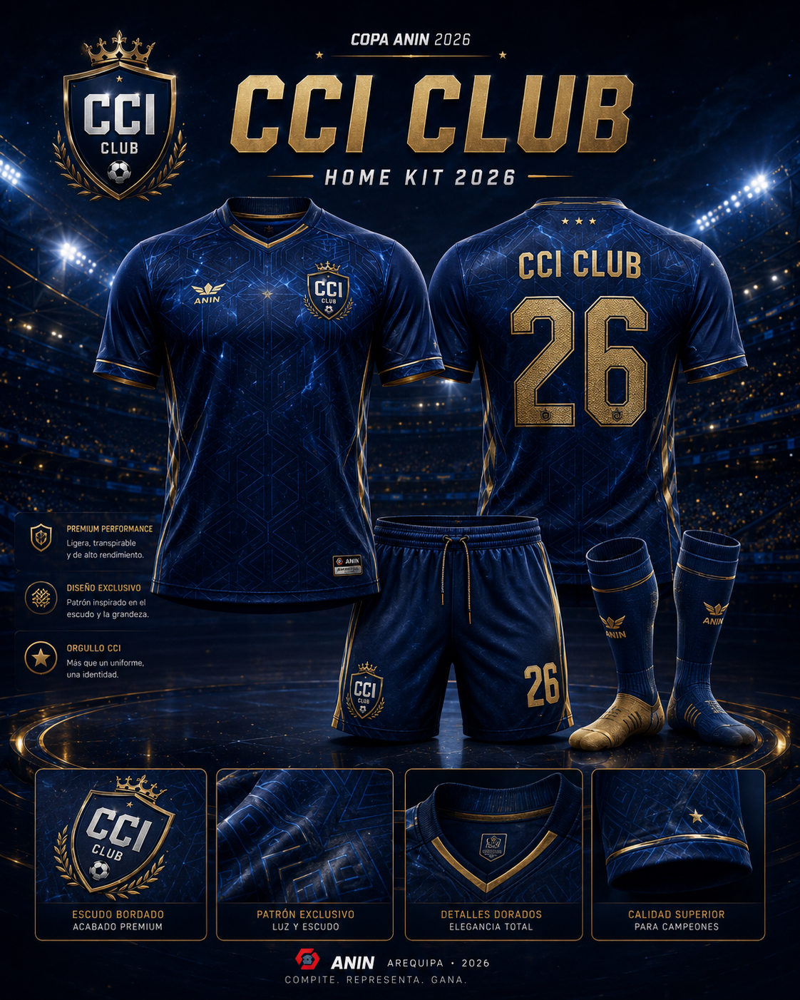
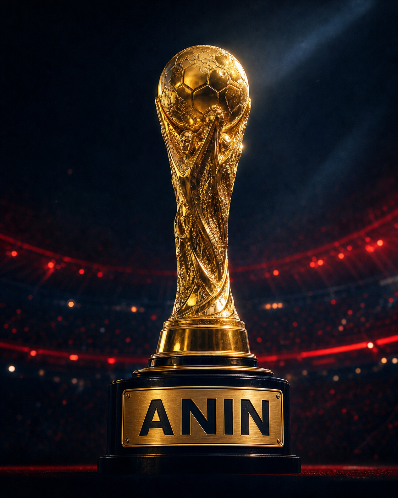
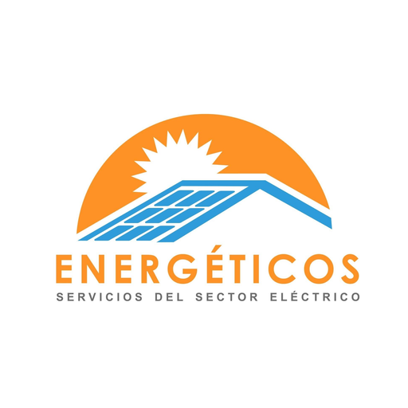

Plantel oficial
CCI CLUB
Orden, identidad y ambición para pelear la gloria de la Copa ANIN 2026.


La cancha está lista. Los planteles están completos. Vive la Copa ANIN 2026: conoce a sus protagonistas, elige tus colores y súmate a la previa del torneo.

Una noche para competir, celebrar el aniversario de ANIN y demostrar que el juego limpio también construye grandes equipos.
Cómo llegarCancha Balón Fuego ↗Haz clic en cada equipo y descubre su camiseta oficial, su álbum premium y la narrativa que lo convierte en protagonista de esta edición.
Orden, identidad y ambición para pelear la gloria de la Copa ANIN 2026.

Los planteles oficiales ya fueron definidos y publicados en esta página.
Viernes 17 de julio de 2026, de 8:00 p. m. a 10:00 p. m.
Cancha deportiva Balón Fuego, Arequipa.
Se promoverá el respeto, la integración y la sana competencia.
Cada equipo cuenta con identidad visual premium y álbum oficial.
Los visitantes pueden dejar comentarios para alentar a sus favoritos.
Explora los planteles oficiales, comparte comentarios y genera expectativa antes del pitazo inicial.

Servicios especializados para el sector eléctrico. Conoce TecGo, su plataforma digital.
COMENTA, ALIENTA Y GENERA EXPECTATIVA
Deja tu comentario, apoya a tu equipo favorito y crea una corriente de opinión alrededor de la Copa ANIN 2026.
Comenta con respetoJuego limpio dentro y fuera de la cancha.
Apoya a tu equipoHaz sentir tu voz y tu favoritismo.
Comparte expectativaLos visitantes verán el ambiente de la copa.